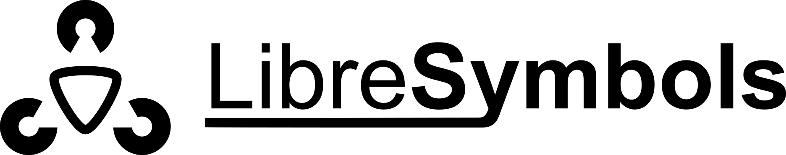
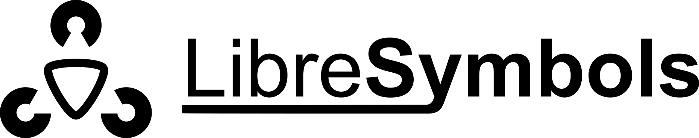

A set of gallery symbols for LibreOffice and Apache OpenOffice. Have a look at our examples or this short video to get an idea of what you can do with this extension.
Team:
- Stefan Schmidhuber
- Vikas Jois
Contributors:
- Uwe Homm

A set of gallery symbols for LibreOffice and Apache OpenOffice. Have a look at our examples or this short video to get an idea of what you can do with this extension.
Team:
Contributors: